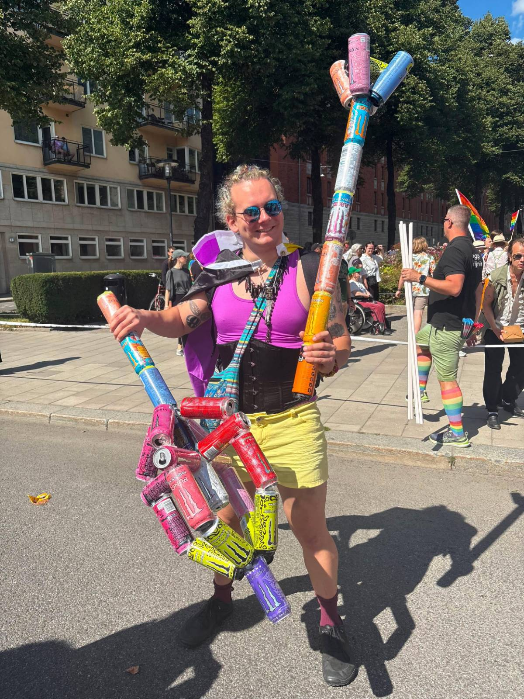

Eben Kadile
Mathematics, Machine Learning, and Art
kadile "at" kth "dot" se

About
I am a Computer Science PhD student at KTH. I like sci-fi novels, weird art projects, spontaneous adventures, and octopuses.
The aim of my PhD is to develop "event-based" algorithms for mobile robot perception. That means the robot should only do computations when something new or surprising happens, as opposed to re-computing everything at a fixed frame rate.
Most of the stuff on this blog is from between 2017 and 2022. Hopefully, the WebGL code is still working on most machines and browsers, but no promises. If something here fascinates you, feel free to reach out. I have written my academic email in a format which is supposedly difficult to scrape.